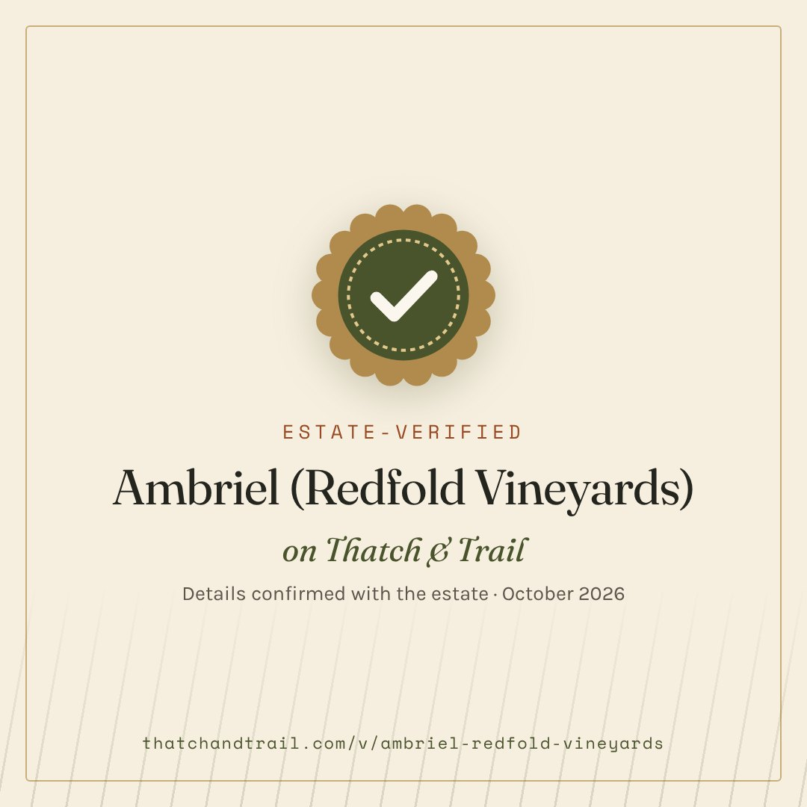

How we check
What “estate-verified” means
When a page carries the estate-verified badge, the estate itself has confirmed its details to us by email: opening days, tours, food, dogs, getting there. 122 vineyards so far.
The short version
We build every page from the estate’s own published information, then write to the people who run it and ask them to check it. Once they’ve answered, the page is marked estate-verified with the month they confirmed it. Anything we’ve taken from an estate’s website and not yet confirmed is labelled “From their website”.
Vineyards change their tasting days and their menus with the seasons, so we keep checking, and it’s always worth confirming with the estate before you travel. Being listed and verified is free.
Sussex 32 estates
- Ambriel (Redfold Vineyards) October 2026
- Artelium Wine Estate October 2026
- Beacon Down Vineyard October 2026
- Bolney Wine Estate July 2026
- Busi Jacobsohn Wine Estate October 2026
- Charles Palmer Vineyards October 2026
- Court Garden Vineyard October 2026
- Hidden Spring November 2026
- Kinsbrook Vineyard August 2026
- Leonardslee Wine Estate August 2026
- Mousehall Distillery & Vineyard October 2026
- Newick Wine Estate November 2026
- Nutbourne Vineyard August 2026
- Nyetimber August 2026
- Oastbrook Estate August 2026
- Off The Line Vineyard November 2026
- Oxney Organic Estate August 2026
- Rathfinny Wine Estate July 2026
- Ridgeview Wine Estate August 2026
- Roebuck Estates September 2026
- Rowfant Vineyard November 2026
- Sedlescombe Organic September 2026
- Sugrue South Downs November 2026
- The Secret Vineyard November 2026
- Tickerage Vineyard November 2026
- Tillingham Estate August 2026
- Tilsmore November 2026
- Tinwood Estate August 2026
- Weyborne November 2026
- Wildwood Vineyard October 2026
- Winklestone Vineyard October 2026
- Wiston Estate July 2026
Kent 13 estates
- Brabourne Vineyard November 2026
- Chartham Vineyard October 2026
- Davenport Vineyards November 2026
- Domaine Evremond October 2026
- Four Daughters Vineyard November 2026
- Gusbourne Estate October 2026
- Ham Street Wines October 2026
- Nine Oaks Vineyard November 2026
- Oast Wood October 2026
- Silverhand Estate October 2026
- Simpsons’ Wine Estate October 2026
- Squerryes October 2026
- Westwell Wine Estates October 2026
Hampshire 8 estates
- Black Chalk October 2026
- Candover Brook October 2026
- Exton Park October 2026
- Hambledon Vineyard October 2026
- Northbrook Vineyard October 2026
- Otium Wine Estate November 2026
- Raimes October 2026
- The B58 Winery November 2026
Surrey 4 estates
- Albury Organic Vineyard October 2026
- Denbies Wine Estate October 2026
- Godstone Vineyards November 2026
- Greyfriars Vineyard October 2026
Berkshire & Buckinghamshire 5 estates
- All Angels Vineyard October 2026
- Harrow & Hope November 2026
- Marlow Valley Vineyard November 2026
- Stanlake Park October 2026
- Winding Wood Vineyard November 2026
East of England 15 estates
- ARK Wines at Mount Farm Vineyards October 2026
- Bailey Hills November 2026
- Brecks Vineyard November 2026
- Burn Valley Vineyard October 2026
- Burnt House Vineyard October 2026
- Chet Valley Vineyard November 2026
- Crouch Ridge Estate October 2026
- Dedham Vale Vineyard October 2026
- Gutter & Stars November 2026
- Humbleyard Vineyard November 2026
- New Hall Wine Estate October 2026
- Saffron Grange November 2026
- Valley Farm Vineyards November 2026
- Walsingham Estate Vineyard November 2026
- Warden Abbey Vineyard November 2026
The South West 21 estates
- Alder Vineyard November 2026
- Aldwick Estate November 2026
- Bantham Vineyard November 2026
- Bluestone Vineyard October 2026
- Bosue Vineyard November 2026
- Breezy Ridge Vineyard November 2026
- Bride Valley Vineyard November 2026
- Camel Valley October 2026
- Carvers Hill Estate October 2026
- Heron Farm November 2026
- Kenton Park Estate November 2026
- Langham Wine Estate October 2026
- Limeburn Hill Vineyard November 2026
- Little Waddon Vineyard November 2026
- Lyme Bay Winery October 2026
- Polgoon Vineyard October 2026
- Quoins Organic Vineyard November 2026
- Saddle Goose November 2026
- Sandridge Barton Wines October 2026
- Trevibban Mill November 2026
- Wellhayes Vineyard November 2026
Cotswolds & the West 8 estates
- 1276 Wines November 2026
- Astley Vineyard November 2026
- Chase End Vineyard November 2026
- Larkhill Vineyard October 2026
- Marlbank Vineyard November 2026
- Poulton Hill Estate October 2026
- White Heron Estate October 2026
- Woodchester Valley Vineyard October 2026
Wales 6 estates
- Glyndwr Vineyard October 2026
- Llaethliw November 2026
- St Hilary Vineyard November 2026
- The Dell Vineyard October 2026
- Velfrey Vineyard October 2026
- White Castle Vineyard October 2026
Yorkshire 5 estates
- Carlton Towers October 2026
- Dunesforde October 2026
- Helme Edge Vineyard November 2026
- Knotfield Vines November 2026
- Leventhorpe Vineyard November 2026
Channel Islands 1 estate
- Reservoir View Vineyard November 2026
The Midlands 4 estates
- Hanwell Wine Estate November 2026
- Pattingham Vineyard November 2026
- Veenow November 2026
- Wolds Wine Estate November 2026
For verified estates
Add the badge to your website
If your page is estate-verified, you’re welcome to show it. Pick your estate, copy the code into your website (a visit or tours page works well), and the badge will link straight to your page on Thatch & Trail.

Sharing it on social media


Not verified yet, or something’s changed? Email thatchandtrail@gmail.com and we’ll check your page with you.